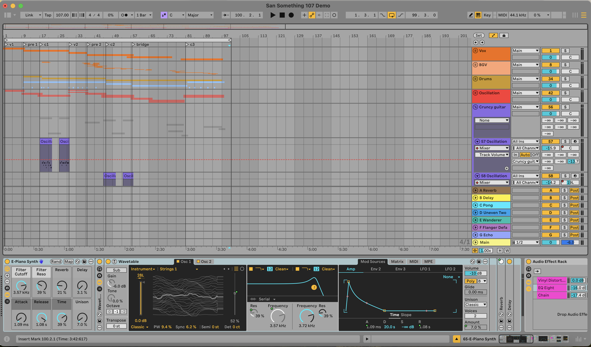

Written: April 29, 2025
Genre: Pop-Rock
Vibe: Confident on a hot summer's day
Favorite Line: "Santa Sophia will never ever go back"

My DAW for San Something!
I came up with the idea of San Something after noticing that so many cities in California (and Texas and Spain and just in general) started with San, and I was like, what’s the deal with that? We don’t have that in the Midwest. So, apparently San and Santa mean “Saint” in Spanish, so I imagined all of these cities being characters of their own, like a big party full of the San and Santa cities, and there’s drama and beef and romance and all the good stuff you could make a reality TV show out of. I imagine the mood is like when you are talking to someone you lowkey find attractive (omg, blushing rn), and nothing they say actually goes through, your mind is just running at 107 miles per hour trying to come up with ways to react and how you might appear to this person. Hence, “I wasn’t really listening.” Ironically, I was coming up with the idea of this song when this person was talking about the history of San *insert the city name* (I really wasn’t listening). I went back to my room and wrote “he’s telling me the history of the history of San Something.” Then I randomly went, “I wasn’t really listening.” And then I was like, what rhymes with San Something? Band thumping…inside of the heart in me. I ran over to the practice rooms and got the chords sorted out.
It wasn’t a few weeks later that I came up with the verses and bridge. I had put it on the backburner because nothing was really clicking but something must have clicked on this day. I was sitting in orchestra rehearsal, zoning out because that’s unfortunately just how my mind works, and I started to play the song in my head. Before I knew it, I started thinking about the inspiration behind the song, and the lyrics/melody for the verses came to me. It helped to use the words around me, whether written on the sheet music, or on the socks of the girl in front of me, for ways to just find rhymes. Then I thought about the Spanish influence and I unfortunately don’t speak Spanish and am rather not proficient at languages in general, so I grasped onto the only Spanish I know—”Le encanto,” which means “he/she likes it,” and “Le dio risa,” which means “it made him/her laugh.” Funny story, the only reason I know these words is because I have a Samsung phone and for some reason when people have Spanish inputs on their keyboards and they like my message, it says “Le encanto your message” and if they send a laughing emoji, it says “Le dio risa.” Alas, I had basically written the rest of the song in my head when unfortunately I got scolded for not paying attention in rehearsal. But I wrote it all down during the break and raced to the piano to put melody to it after rehearsal, and yay, the song was done.
Wow, that was a tangent. But as for production, I was super in the trenches and highkey exhausted so I was literally lazily lying in bed when making this demo. I had my MIDI keyboard and I was picking out sounds, threw on an arpeggiator for the synth, found some sounds that sounded closest to the dirty guitar sound I wanted. Then, since I wanted a Latin-beat influence, I created some rhythm with Congas and panned them according to the patterns. Fun fact, it’s set at 107 bpm!